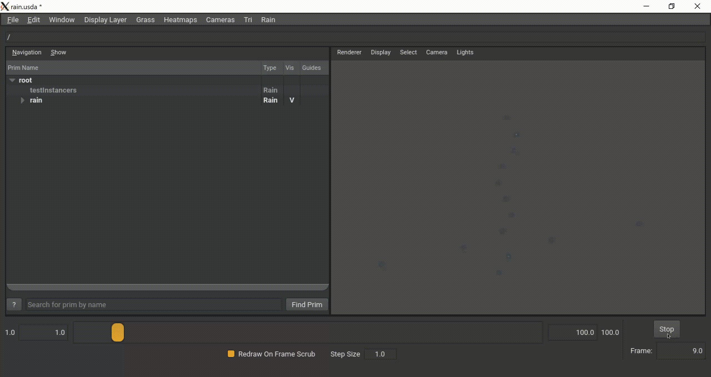

Most rendering systems for rain are based on Physics simulations. The positions of the droplets are based on prior velocities, acceleration etc. This requires keeping track of a lot of data and performing a lot of calculations at every step, which can be expensive. It also doesn't provide a lot of control to the artist in terms of the movement of the rain. The goal of this project is to create a system that will render rain only using time data - without needing to keep track of velocities, acceleration etc.
The project will utilize the concept of B-Spline curves to render rain. The idea is that the artist can provide a set of control points, which our program will interpolate with to create a curve. We will then sample points along that curve to determine the positions of the droplets. We will vary the sampling location along the curve based on the time/frame number. We will render the droplets by using reflectance properties of water.
The project was built using OpenUSD and Hydra. Universal Scene Description (USD) is a framework for interchange of 3D computer graphics data, developed by Pixar Animation Studios. Hydra is an open source rendering framework to transport live scene graph data to renderers. Since these technologies are gaining increasing popularity in the animation industry, this project benefitted from utilizing them. They also make it easy to work with different renderers and 3D modelling software, making them very convenient platforms. The project involved creating a custom USD Schema and a Hydra imaging adapter for art–directable rain.
A snippet of the project shown rendered in usdview
Rendering Params